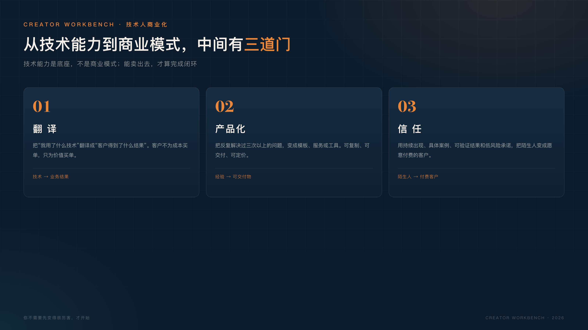

技术人最不缺的是解决问题。
最缺的是把问题变成别人愿意付费的产品。
我见过很多技术能力很强的人，包括我自己。
我们能搭系统、能查故障、能写脚本、能把一个模糊需求拆成模块和接口。但只要话题一转到“怎么把它卖出去”，就会突然变得不自信：
这些问题，代码解决不了。
从“会写代码”到“能卖东西”，中间缺的不是技术，而是三个能力：翻译、产品化、建立信任。
技术人习惯说“我做了什么”：
但客户不为技术买单。
他们只为“我少花了多少钱、多赚了多少钱、少踩了多少坑、省了多少时间”买单。
同样一件事，换几种说法（以下数字均为示例）：
技术是成本项，业务结果是价值项。
练习方法：拿你最近做过的一个技术项目，用一句话回答三个问题：
如果答不出来，说明你还没有把技术翻译成价值。
假设一个例子：你帮一家公司做了一个内部知识库。技术描述是“基于 RAG 的文档检索系统”；业务描述可以是“新员工找制度文件的时间，从平均 20 分钟降到 2 分钟，客服回答错政策的情况减少了一半”。前者是成本，后者是结果。
所以，描述项目时先说结果，再说实现。
这不是话术训练，而是换位思考：你得先理解对方的业务，再决定技术怎么表达。理解不深，翻译就会变成夸大。
很多技术人做副业，第一反应是“接私活”。
接私活不是不行，但它很难持续：
产品化不是让你马上做一个 SaaS。
产品化是把你反复解决的同一类问题，变成可复制、可交付、可定价的东西：
判断一个东西能不能产品化，看三个标准：
先把你解决过三次以上的问题，写成一个固定交付物。
产品化有三个层级，可以按顺序走：
不要一上来就做工具层。先在模板层和服务层验证有人愿意付费，再考虑写代码。
定价也可以从低到高：先用 9.9 元或 99 元的小产品验证“有人愿意付”，再用 499–999 元的服务验证“有人愿意为判断付”（这是假设价格带，待验证），最后才考虑更贵的产品。
技术人常常觉得“只要东西好，自然会有人买”。
但市场不是这样运转的。
陌生人不会因为你代码写得好就付钱，他需要先相信三件事：
建立信任最慢、也最稳的方式，是持续公开你的判断和过程：
信任不是一次说服，是一连串小证据的累积。
一个简单的信任公式：
信任 = 持续出现 × 具体案例 × 可验证结果 × 低风险承诺
持续出现，是让人知道你还在这；具体案例，是让人知道你真的做过；可验证结果，是让人知道你不是只会说；低风险承诺，是让人敢迈出第一步。
所以早期不要承诺“保证效果”，而是给出一个低风险动作：先看一份清单、先做一次 15 分钟判断、先试用一个模板。

比如你写“我能帮企业做 AI 落地”，别人很难判断要不要找你；但如果你写“这是我给一家 20 人公司做的 AI 知识库自查清单，你可以先自己打一遍分”，对方就容易迈出第一步。
渠道也不用多。公众号、小红书、视频号、知乎，选一个你愿意持续更新的，先把一个渠道做透。
你不需要一开始就有很多粉丝。
一个经验值是：当 10 个目标客户看完你的内容后，至少有 1 个愿意跟你聊 15 分钟。
技术人最容易犯的错，是花三个月做一个“完美产品”，然后发现没人买。
更稳的顺序是：先卖，再做。
这里的“卖”不是收钱不交付，而是先验证有人愿意为这个问题付费：
先卖再做，不是投机，是用最小的成本验证需求。你省下的不是开发时间，是三个月的方向错误。
验证方式可以很轻：一封介绍邮件、一次 15 分钟电话、一个只包含 3 页的样例。不要用“我还在开发”当借口，也不要用“等上线再说”拖过最好的验证期。
如果你现在想开始，不要先做产品、不要先做课程、不要先辞职。
先做这个练习：
这个练习的价值不在于赚多少钱，而在于让你第一次完整经历：
发现问题 → 提供价值 → 获得反馈 → 形成内容 → 带来下一个客户。
如果你暂时找不到真实的人，就找一个公开的案例：选一个你熟悉的行业问题，写一份 1 页的诊断示例。它不能代替真实反馈，但可以帮你把思路讲清楚。
“我还没准备好。”
你永远不会准备好。先做一次最小交付，比再学三个月更有用。
“我不擅长表达。”
表达不是天赋，是结构。用“问题—判断—方法—行动”四段式，任何人都能写出可读的内容。
“等我做出产品再说。”
产品是做出来的，也是卖出来的。没有真实反馈的产品，只是你的想象。
这三个借口背后，其实是同一个问题：害怕被拒绝。 但被拒绝一次，比在脑子里排练一百次更有价值。
技术能力是底座，不是商业模式。
从会写代码到能卖东西，中间要跨过三道门：
三道门都不容易，但每一道都可以从今天开始练。
你不需要先变得很厉害，才开始；你需要先开始，才会慢慢变得厉害。
如果你已经有一个想做的方向，今天就可以做一件很小的事：写下你能帮谁解决什么问题，然后找一个真实的人，把这句话发给他。
不要等产品、不要等网站、不要等名片。先让一个人知道你能解决他的问题，这就是商业化的第一步。
这条路不容易，但每一步都算数。你不需要成为销售天才，只需要成为一个能把自己的价值讲清楚的技术人。
如果你也在跨这条路，我们一起把技术变成价值。
这不是鸡汤，是可以一步步练出来的能力。愿你早日跨过这三道门，把技术变成真正属于自己的生意。
如果你也是技术人，欢迎在评论区说说：你现在最想跨过的是哪一道门？